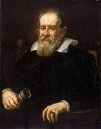
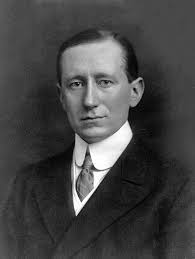

Galileo Galilei

Measure what can be measured, and make measurable what can not be measured
Guillermo Marconi

Measure what can be measured, and make measurable what can not be measured
Jane Goodall
Measure what can be measured, and make measurable what can not be measured
Rita Levi Montalcini
Measure what can be measured, and make measurable what can not be measured
Louis Pasteur

Measure what can be measured, and make measurable what can not be measured
Margaret Mead
Measure what can be measured, and make measurable what can not be measured